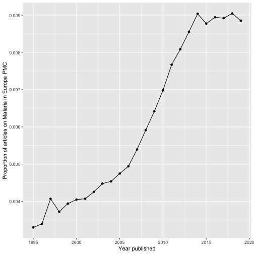

europepmc facilitates access to the Europe PMC RESTful Web Service. The client furthermore supports the Europe PMC Annotations API to retrieve text-mined concepts and terms per article.
Europe PMC covers life science literature and gives access to open access full texts. Europe PMC ingests all PubMed content and extends its index with other literature and patent sources.
For more infos on Europe PMC, see:
Levchenko, M., Gou, Y., Graef, F., Hamelers, A., Huang, Z., Ide-Smith, M., … McEntyre, J. (2017). Europe PMC in 2017. Nucleic Acids Research, 46(D1), D1254–D1260. https://doi.org/10.1093/nar/gkx1005
Implemented API methods
This client supports the following API methods from the Articles RESTful API:
| API-Method | Description | R functions |
|---|---|---|
| search | Search Europe PMC and get detailed metadata |
epmc_search(), epmc_details(), epmc_search_by_doi()
|
| profile | Obtain a summary of hit counts for several Europe PMC databases | epmc_profile() |
| citations | Load metadata representing citing articles for a given publication | epmc_citations() |
| references | Retrieve the reference section of a publication | epmc_refs() |
| databaseLinks | Get links to biological databases such as UniProt or ENA |
epmc_db(), epmc_db_count()
|
| labslinks | Access links to Europe PMC provided by third parties |
epmc_lablinks(), epmc_lablinks_count()
|
| fullTextXML | Fetch full-texts deposited in PMC | epmc_ftxt() |
| bookXML | retrieve book XML formatted full text for the Open Access subset of the Europe PMC bookshelf | epmc_ftxt_book() |
From the Europe PMC Annotations API:
| API-Method | Description | R functions |
|---|---|---|
| annotationsByArticleIds | Get the annotations contained in the list of articles specified | epmc_annotations_by_id() |
Installation
From CRAN
install.packages("europepmc")The latest development version can be installed using the remotes package:
require(remotes)
install_github("ropensci/europepmc")Loading into R
Search Europe PMC
The search covers both metadata (e.g. abstracts or title) and full texts. To build your query, please refer to the comprehensive guidance on how to search Europe PMC: http://europepmc.org/help. Provide your query in the Europe PMC search syntax to epmc_search().
europepmc::epmc_search(query = '"2019-nCoV" OR "2019nCoV"')
#> # A tibble: 100 x 29
#> id source pmid pmcid doi title authorString journalTitle issue journalVolume pubYear
#> <chr> <chr> <chr> <chr> <chr> <chr> <chr> <chr> <chr> <chr> <chr>
#> 1 3318… MED 3318… PMC7… 10.1… The … Kim YJ, Qia… Medicine (B… 46 99 2020
#> 2 3240… MED 3240… PMC7… 10.1… Livi… Santillan-G… Med Intensi… <NA> <NA> 2020
#> 3 3259… MED 3259… PMC7… 10.1… Earl… Hanrahan JG… World Neuro… <NA> 141 2020
#> 4 3311… MED 3311… PMC7… 10.7… UNCO… Xu W, Zhang… J Glob Heal… 2 10 2020
#> 5 3234… MED 3234… PMC7… 10.1… Obes… Carretero G… Rev Clin Esp 6 220 2020
#> 6 PMC7… PMC <NA> PMC7… <NA> Obes… Carretero G… Rev Clin Es… 6 220 2020
#> 7 PPR1… PPR <NA> <NA> 10.2… Comp… Han Y, Feng… <NA> <NA> <NA> 2020
#> 8 3283… MED 3283… PMC7… 10.1… New … Gao W, Bask… Adv Differ … 1 2020 2020
#> 9 PPR1… PPR <NA> <NA> 10.2… Clin… Lu H, Zheng… <NA> <NA> <NA> 2020
#> 10 PPR1… PPR <NA> <NA> 10.1… The … Benvenuto D… <NA> <NA> <NA> 2020
#> # … with 90 more rows, and 18 more variables: journalIssn <chr>, pageInfo <chr>, pubType <chr>,
#> # isOpenAccess <chr>, inEPMC <chr>, inPMC <chr>, hasPDF <chr>, hasBook <chr>, hasSuppl <chr>,
#> # citedByCount <int>, hasReferences <chr>, hasTextMinedTerms <chr>,
#> # hasDbCrossReferences <chr>, hasLabsLinks <chr>, hasTMAccessionNumbers <chr>,
#> # firstIndexDate <chr>, firstPublicationDate <chr>, versionNumber <int>Be aware that Europe PMC expands queries with MeSH synonyms by default. You can turn this behavior off using the synonym = FALSE parameter.
By default, epmc_search() returns 100 records. To adjust the limit, simply use the limit parameter.
See vignette Introducing europepmc, an R interface to Europe PMC RESTful API for a long-form documentation about how to search Europe PMC with this client.
Creating proper review graphs with epmc_hits_trend()
There is also a nice function allowing you to easily create review graphs like described in Maëlle Salmon’s blog post:
tt_oa <- europepmc::epmc_hits_trend("Malaria", period = 1995:2019, synonym = FALSE)
tt_oa
#> # A tibble: 25 x 3
#> year all_hits query_hits
#> <int> <dbl> <dbl>
#> 1 1995 448921 1482
#> 2 1996 458439 1557
#> 3 1997 456592 1858
#> 4 1998 474523 1767
#> 5 1999 493567 1945
#> 6 2000 531927 2154
#> 7 2001 545527 2221
#> 8 2002 561251 2388
#> 9 2003 588341 2635
#> 10 2004 627949 2849
#> # … with 15 more rows
# we use ggplot2 for plotting the graph
library(ggplot2)
ggplot(tt_oa, aes(year, query_hits / all_hits)) +
geom_point() +
geom_line() +
xlab("Year published") +
ylab("Proportion of articles on Malaria in Europe PMC")
For more info, read the vignette about creating literature review graphs:
https://docs.ropensci.org/europepmc/articles/evergreenreviewgraphs.html
Re-use of europepmc
Check out the tidypmc package
https://github.com/ropensci/tidypmc
The package maintainer, Chris Stubben (@cstubben), has also created an Shiny App that allows you to search and browse Europe PMC:
Other ways to access Europe PubMed Central
Other APIs
- Data dumps: https://europepmc.org/FtpSite
- OAI service: https://europepmc.org/OaiService
- SOAP web service: https://europepmc.org/SoapWebServices
- Grants RESTful (Grist) API: https://europepmc.org/GristAPI
Other R clients
- use rOpenSci’s
oaito get metadata and full text via Europe PMC’s OAI interface: https://github.com/ropensci/oai - use rOpenSci’s
rentrezto interact with NCBI databases such as PubMed: https://github.com/ropensci/rentrez - rOpenSci’s
fulltextpackage gives access to supplementary material of open access life-science publications in Europe PMC: https://github.com/ropensci/fulltext
Meta
Please note that this project is released with a Contributor Code of Conduct. By participating in this project you agree to abide by its terms.
License: GPL-3
Please use the issue tracker for bug reporting and feature requests.